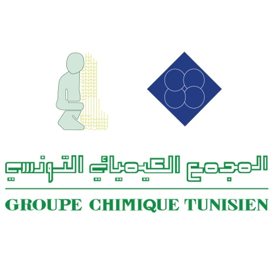

mon parcours
baccalaureat
j'ai pris pris mon baccalaureat section technique a lycée secondaire de regueb avec la mention bien
ma faculté
j'ai pris ma license nationale en genie electrique specialitée automatisme et informatique industrielle
mes stages
stage 1
jai effectué mon premier stage d'initiation a IDEAL recyclege(1mois)

stage 2
j'ai effectué mon deuxieme stage de perfectionnement aussi a IDEAL recyclage:étude du couplage de moteyr de refroidissement des resistances d'une extrudeuse (1mois)
stage 3
j'ai effectué mon troisieme stage (PFE) a groupe chimique skhira (6 mois): remise en état de la supervision de l'installation SER a l'usine skhira Groupe Chimique Tunisien
